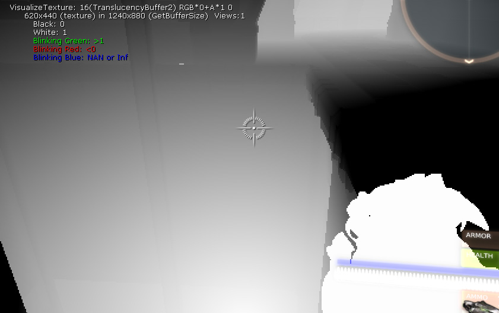
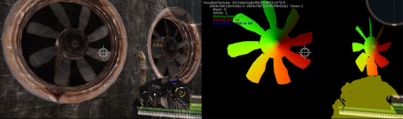
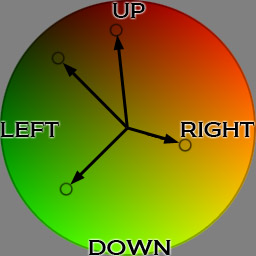
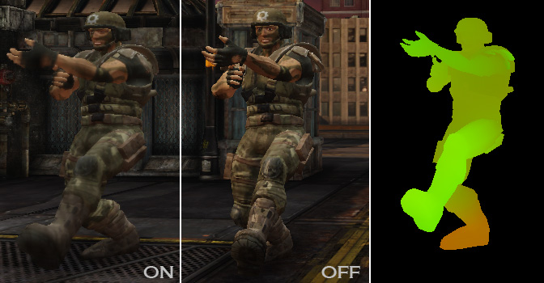
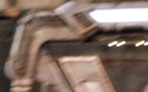
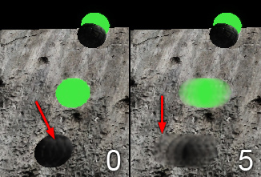
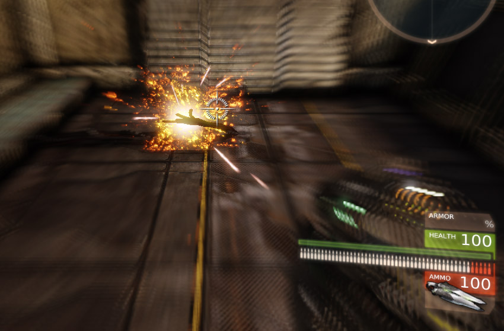
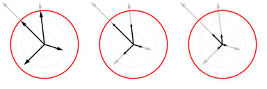
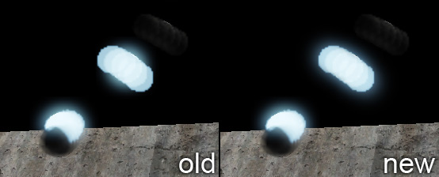

UDN
Search public documentation:
MotionBlurCH
English Translation
日本語訳
한국어
Interested in the Unreal Engine?
Visit the Unreal Technology site.
Looking for jobs and company info?
Check out the Epic games site.
Questions about support via UDN?
Contact the UDN Staff
日本語訳
한국어
Interested in the Unreal Engine?
Visit the Unreal Technology site.
Looking for jobs and company info?
Check out the Epic games site.
Questions about support via UDN?
Contact the UDN Staff
运动模糊后期特效
 |
| 左侧：没有使用运动模糊 右侧：使用运动模糊（以及快速相机运动） |
概述
实现
 |
| 一个向前走动的玩家认为运动模糊与图片角落中的情况非常接近。 您可以看到全分辨率图片与半分辨率运动模糊图片柔和地混合过渡。 |

注意，旋转玩家视角会形成运动模糊。预计会是这样，但是可能并不是玩家想要看到的结果。正常情况下，眼睛会集中在图片中一些有趣的地方，然后追随着它们。 对于眼睛而言，运动模糊会消失。为了模拟这种效果，我们将需要进行适当的眼睛追踪或模拟眼睛的行为（在很多情况下可能都会失败）。选择方案： 运动模糊较少，遮住 运动模糊影响大部分屏幕外部的空间，限制游戏关键环节时的运动模糊，帧速率较高。 对于 camera motion blur（相机运动模糊） ，远离上一个视图矩阵、当前视图矩阵和像素深度时可以计算这个 2D 运动向量。对于 object motion blur（对象运动模糊） ，我们通过将所有运动模糊对象的几何体渲染到所谓速度贴图中，计算每像素的向量（由于性能原因，会剔除小对象和移动慢的对象）。在使用 VisualizeTexture（可视化贴图） 控制台命令时可以看到该贴图中的数据：|  |
| 左侧：在游戏中看到的叶轮片旋转。 右侧：同样的场景通过 VisualizeTexture 控制台命令显示的效果。 |
|  |
| 这个速度贴图中的颜色代表对象运动。 黑色为相机/没有对象运动保留。 蓝色和 alpha 通道可能会被径向模糊功能使用。 |
|  |
| 运动模糊植皮允许身体的各个部分在不同的方向移动。 |
定向模糊
|  |
| 明亮的对象（HDR 内容）会由于运动模糊而看上去更亮。 |
|  |
| SoftEdge（柔和边缘）能使运动模糊出现在移动对象的外面。 |

调整参数
 Max Velocity（最大速度） 会通过指定大小（通过屏幕宽度进行缩放调整，无论高度是多少始终都是圆形的）限制磁盘中的运动。这个值是某个大小合理的内部常量的系数。小于 1 的数可以进一步限制向量，大于 1 的数会使模糊轻度更大，但是因为我们知道同一个样本的确切数目，所以结果有所不同（多个图片）。
Max Velocity（最大速度） 会通过指定大小（通过屏幕宽度进行缩放调整，无论高度是多少始终都是圆形的）限制磁盘中的运动。这个值是某个大小合理的内部常量的系数。小于 1 的数可以进一步限制向量，大于 1 的数会使模糊轻度更大，但是因为我们知道同一个样本的确切数目，所以结果有所不同（多个图片）。
 Motion Blur Amount（运动模糊量） 允许缩放运动模糊向量。最好首先调整这个值，然后将 Max Velocity（最大速度）限定值设置得高一点，要不然您将无法看到大小的变化。您最后可能会得到一个由小半径限定的高运动模糊量。即使是小运动也会产生模糊，整体效果可能会比禁用运动模糊后差。
Motion Blur Amount（运动模糊量） 允许缩放运动模糊向量。最好首先调整这个值，然后将 Max Velocity（最大速度）限定值设置得高一点，要不然您将无法看到大小的变化。您最后可能会得到一个由小半径限定的高运动模糊量。即使是小运动也会产生模糊，整体效果可能会比禁用运动模糊后差。

Full Motion Blur（全运动模糊） 复选框允许禁用相机运动模糊。对象运动模糊将仍然处于激活状态。 Camera Rotation Threshold（相机旋转阙值） 直到相机运动模糊被禁用之前相机可以旋转的最大角度（它适用于相机切换）。 Camera Translation Threshold（相机平移阙值） 直到相机运动模糊被禁用之前相机可以移动的距离（同样适用于相机切换）。 注意，后期处理链中的设置可以被后期处理体积覆盖。 在 Actor 中，您可以找到 Motion Blur Scale（运动模糊缩放） 。需要使用这个值一次禁用随相机移动的对象上的运动模糊（例如，平台）。以后不会再需要这个值了，因为运动模糊现在可以正确地处理此类相关运动。如果我们发现我们缺少一些使用新的实现的实例，不久之后将会删除或者重新激活这个值。与运动模糊之间的交互
|  |
| 注意，使用新方法后，光溢出变得更暗了，在移动对象的路径上扩散得更多。 |
在快速移动对象或快速相机移动以及正确设置作用下，效果变得明显（最大速度大，运动模糊量大，光溢出阙值 vs. 对象亮度运动模糊软边）。那么之前出现光溢出现象的亮度高内容扩散得更多，这同时可以使运动模糊变得没那么明显。
已知限制和问题
- 对于运动模糊，像在 Matinee 中一样进行相机切换会出现问题。我们目前依赖使用较大的相机旋转或平移禁用运动模糊。可以使用这两个值的自定义阙值。理想情况下，Matinee 将会生成一个事件，这样可以避免发生用户错误。不过，即使这个问题得以解决，仍然还是会有其他问题存在（例如，游戏代码）。理想情况下，我们会一直移动相机，而处理跳跃或相机切换要使用不同的方法。这实现起来需要更多的技巧，因为每帧（每个视图）都会重新创建相机对象。
- 最大速度偏高的话可能会导致出现多个图片（我们尝试在每个像素上随机进行，但是结果不够好。更多的样本会有所帮助，但是性能会受到影响，所以我们可能会为它添加一个选项）。
- 运动模糊以半分辨率输入为基础，渲染到在 uber 后期处理渲染中使采样率增大的半分辨率贴图。这个过程是可见的。调整遮挡过程可能会有所帮助（还没有介绍）。
- 为了获得更多的编辑经验，我们在编辑器中将运动模糊禁用了。这同时也作用于 Radial（径向）模糊。
有用的控制台命令
-
show postprocess - 完全启用/禁用后期处理
-
VisualizeTexture - 可以查看中间缓冲（例如，半分辨率运动模糊输入，速度贴图或运动模糊输出）
-
MotionBlurMaxVelocity - 可以覆盖后期特效设置（进行调整和调试）。
-
MotionBlurAmount - 可以覆盖后期特效设置（进行调整和调试）。
-
MotionBlurSoftEdge - 请参阅运动模糊软边
-
MotionBlurSkinning - 请参阅运动模糊植皮
-
set skeletalmeshcomponent bforcerefpose 1 - 禁用动画对象的皮肤
-
slomo 0.1 - 降低世界仿真速度（1 是将其设置恢复到默认值）